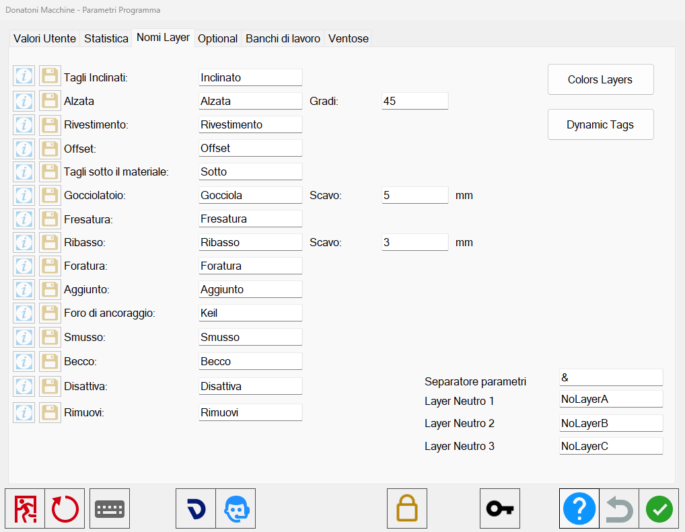

La macchina può eseguire tagli, fresature e fori tramite disegni creati con software CAD e salvati in formato “.dxf“ con il riconoscimento automatico di alcune lavorazioni utili per semplificare e rendere più veloce il lavoro all’operatore bordo macchina.
Per fare in modo che Parametrix possa interpretare queste informazioni, dovranno essere rispettate alcune convenzioni in fase di realizzazione del disegno:
Tutti i pezzi disegnati devono essere chiusi e convertiti in polilinee formando un poligono.
Qualora si desideri inserire la marca del pezzo per l’identificazione dovrà essere inserita all’interno del poligono.

Impostazioni Parametrix per il riconoscimento dei layer importati
Per accedere alla finestra dedicata alle impostazioni di personalizzazione relative all’importazione dei file DXF, premere il pulsante dei Parametri Utente che si trova sulla barra superiore di Parametrix.
Da qui, spostarsi nella sezione dedicata alla gestione dei nomi dei Layer.
Per ogni tipologia di funzione elencata, l’utente può assegnare un nome (corrispondente al nome del Layer impostato nel software CAD utilizzato) e assegnare alcuni parametri relativi ai valori di default per alcune lavorazioni.
Funzione | Nome Layer |
Tagli inclinati | Inclinato |
Alzata | Alzata |
Rivestimento | Rivestimento |
Offset | Offset |
Tagli sotto il materiale | Sotto |
Gocciolatoio | Gocciola |
Fresatura | Fresatura |
Ribasso | Ribasso |
Foratura | Foratura |
Taglio aggiunto | Aggiunto |
Foro di ancoraggio | Keil |
Smusso | Smusso |
Becco | Becco |
Disattiva | Disattiva |
Rimuovi | Rimuovi |
Pulsanti
I pulsanti a sinistra di ogni lavorazione permettono di:
Finestra informativa | |
 | Scarica esempio |
Modalità Taglio Inclinato
Per poter inserire in automatico un taglio inclinato è necessario osservare alcune convenzioni:
I tagli inclinati si possono inserire solamente sui lati dei pezzi; qualora il taglio inclinato non valga per tutto il tratto lo si può dividere in più parti.
Può essere applicato il taglio inclinato su archi esterni (Es: tavolo circolare, oppure su copertine curve solamente per quanto riguarda il taglio esterno).
Per quanto riguarda gli archi interni (es: copertine in curva) il taglio viene effettuato a passate; il taglio sarà effettuato inclinando il disco automaticamente, evitando problemi di collisione con il materiale.
La procedura per chi utilizza sistemi CAD, prevede la creazione di un Layer che abbia le seguenti proprietà:
Nome del Layer | Inclinato _ (seguita dal numero che identifica i gradi di inclinazione desiderato). |
Esempio | Inclinato45 o Inclinato-45 |
Quando viene inserito un valore negativo l’inclinazione è riferita ad un taglio divergente mentre se il valore è positivo il taglio sarà convergente verso l’interno del poligono.
Modalità Alzata
La funzione alzata è una lavorazione che permette di ottenere un pezzo rettangolare di pari lunghezza alla retta impostata come lato di riferimento.
Per l’inserimento automatico dei tagli volendo creare un’alzata sarà necessario creare un Layer con il nome “Alzata” e di seguito inserire la misura dell’altezza.
Nome del Layer | Alzata _ (seguita dalla misura dell’altezza dell’alzata). |
Esempio | Alzata100 |
Questo automatismo all’interno di Parametrix crea un nuovo pezzo di larghezza pari alla lunghezza della retta che identifica il lato dell’alzata desiderata con i due lati che saranno incollati assieme tagliati con la stessa inclinazione, pronti per una finitura con cartabuono.
L’inclinazione associata a questi lati è impostabile dal parametro a fianco.
Gradi | Permette di impostare l’inclinazione con cui vengono importati i lati inclinati della lavorazione. |
Modalità Rivestimento
La funzione rivestimento / alzata è una lavorazione che permette di ottenere un pezzo rettangolare di pari lunghezza alla retta impostata come lato di riferimento.
In modo analogo, per l’inserimento automatico dei tagli volendo creare un rivestimento sarà necessario creare un Layer con il nome “Rivestimento” e di seguito inserire la misura dell’altezza.
Nome del Layer | Rivestimento _ (seguita dalla misura dell’altezza del rivestimento). |
Esempio | Rivestimento150 |
Questo automatismo all’interno di Parametrix crea un nuovo pezzo di larghezza pari alla lunghezza della retta che identifica il lato del rivestimento desiderato senza taglio inclinato ma bensì pronto per una finitura ad angolo dritto con presa di costa.
Modalità Offset
La funzione offset è molto utile quando si voglia lasciare più materiale rispetto alle dimensioni del pezzo finito; tramite il disegno di rette sui lati desiderati, le funzioni associate ai lati indicati verranno spostati automaticamente nella direzione corretta.
Per poter inserire in automatico il sovra materiale desiderato sarà necessario creare un Layer con il nome “Offset” e inserire tutte le rette relative ai lati dove si desidera avere effetto automatico dell’impostazione.
Nome del Layer | Offset _ (seguita dal numero che identifica la misura di offset). |
Esempio | Offset3 |
Modalità Taglio Sotto
La funzione di taglio sotto è valida solo per chi ha installato l’optional meccanico che permette di effettuare un taglio sotto la superficie a vista della lastra.
Per poter inserire in automatico un taglio sotto sarà necessario creare un Layer con il nome “Sotto” e inserire una retta che rappresenterà il taglio.
Nome del Layer | Sotto |
Esempio | Sotto |
La lunghezza del taglio risultante dipende anche dal diametro del disco e dallo spessore del materiale impostati su Parametrix.
Modalità Gocciolatoio
La funzione di gocciolatoio permette di inserire un taglio di larghezza maggiore rispetto allo spessore del disco e profondità minore rispetto allo spessore del materiale.
Per poter inserire in automatico un gocciolatoio sarà necessario creare un Layer con il nome “Gocciola” e inserire una retta o arco che rappresenta il centro della larghezza.
Nome del Layer | Gocciola _ (seguita dal numero che identifica la larghezza del gocciolatoio). |
Esempio | Gocciola10 |
In questo modo la profondità del gocciolatoio viene stabilita dal parametro dedicato.
Scavo | Profondità del taglio associato al gocciolatoio. Questo valore non viene considerato se l’utente imposta un valore sul DXF. |
La profondità del taglio può essere gestita in automatico prendendo come valore il parametro dedicato in Parametrix o lasciando che l’utente imposti un valore inserendo il carattere “&” seguito dallo spessore desiderato.
Nome del Layer | Gocciola _ (larghezza del gocciolatoio) _ & _ (profondità del gocciolatoio). |
Esempio | Gocciola10&5 |
La lunghezza del taglio risultante dipende anche dal diametro del disco e dallo spessore del materiale impostati su Parametrix.
Per gocciolatoi in curva viene fatto un solo taglio con il disco esterno all’arco stesso.
Gli eventuali parametri indicati nel nome del Layer non vengono considerati.
Modalità Fresatura
Per poter inserire una fresatura automatica è necessario osservare alcune convenzioni.
Se creata una geometria di fresatura che riguarda uno o più lati del poligono esterno, la fresa effettuerà la lavorazione esterna al perimetro disegnato; vale anche per un singolo lato del perimetro; se la lavorazione prevede il taglio di tutto il perimetro con la fresa vengono tolti eventuali taglio con il disco.
La profondità del taglio può essere definita tramite la creazione di un Layer dedicato.
Nome del Layer | Fresatura _ (seguita dal numero che identifica lo spessore della fresatura). |
Esempio | Fresatura10 |
Se non viene indicato nessun valore di profondità al nome del Layer “Fresatura“ viene considerato lo spessore della lavorazione in corso.
Un’ulteriore funzionalità resa possibile è l’inserimento di una polilinea (aperta/chiusa, ad esempio cerchio o singolo percorso composto da una polilinea lineare) per andare a fresare una forma all’interno del perimetro maggiore.
Modalità Ribasso / Filo Top
La funzione ribasso / filo top è una lavorazione che permette di ribassare un perimetro, solitamente per effettuare l’incasso di elettrodomestici o lavabi.
Per poter inserire in automatico il ribasso desiderato sarà necessario creare un Layer con il nome “Ribasso”.
Nome del Layer | Ribasso _ (seguita dal numero che identifica la larghezza del ribasso). |
Esempio | Ribasso20 |
In questo modo la profondità del ribasso viene stabilita dal parametro dedicato.
Scavo | Profondità del ribasso. Questo valore non viene considerato se l’utente imposta un valore sul DXF. |
La profondità del ribasso può essere gestita in automatico prendendo come valore il parametro dedicato in Parametrix o impostato un valore dall’utente inserendo il carattere “&” seguito dallo spessore desiderato.
Nome del Layer | Ribasso _ (larghezza del ribasso) _ & _ (spessore del ribasso). |
Esempio | Ribasso20&3 |
Il raggio di raccordo tra i lati del perimetro non possono essere modificati dall’utente ma bensì sarà il raggio fresa a determinarlo.
Il ribasso può essere effettuato su di un percorso chiuso non sovrapposto ai lati pezzo, in questo caso verrà effettuata una fresatura all’interno del perimetro disegnato.
Modalità Foratura
La funzione foratura permette al software Parametrix di aggiungere lavorazioni di foratura sui pezzi.
Per poter inserire in automatico una lavorazione di foratura è necessario creare un Layer con il nome “Foratura” e disegnare un cerchio dove si vuole realizzare il foro.
Nome del Layer | Foratura _ (seguita dal numero che identifica la profondità del foro). |
Esempio | Foratura5 |
Se non viene specificata la profondità il foro verrà applicato con lo spessore del materiale correntemente utilizzato da Parametrix.
Nella modalità base il raggio del cerchio corrisponde al raggio dell’utensile correntemente impostato su Parametrix.
Modalità Taglio Aggiunto
La funzione di taglio aggiunto permette al software Parametrix di aggiungere un taglio.
Per poter inserire in automatico un taglio aggiunto è necessario creare un Layer con il nome “Aggiunto” e disegnare sopra alla linea che rappresenta il lato di cui si vuole creare un taglio aggiunto una nuova linea.
Nome del Layer | Aggiunto _ (seguita dal numero che identifica la distanza alla quale il taglio verrà aggiunto). |
Esempio | Aggiunto50 |
Il taglio verrà aggiunto all’interno (dove c'è materiale) o all’esterno (dove non c'è materiale) del pezzo, in base al segno distanza:
Se il segno distanza è positivo, il taglio verrà aggiunto esternamente al pezzo
In caso contrario quando il segno distanza è negativo, verrà aggiunto il taglio internamente al pezzo
Applicando un taglio aggiunto su dei tagli interni, ad esempio di uno scasso, il taglio verrà aggiunto internamente al pezzo, dove non c'è materiale.
Modalità Foro di Ancoraggio
La funzione foro di ancoraggio permette al software Parametrix di aggiungere lavorazioni foro di ancoraggio sui pezzi.
Per poter inserire in automatico una lavorazione foro di ancoraggio è necessario creare una Layer con il nome “Keil” e disegnare un cerchio dove si vuole realizzare il foro di ancoraggio.
Nome del Layer | Keil _ (seguita dal numero che identifica la profondità del foro di ancoraggio). |
Esempio | Keil5 |
Nella modalità base il raggio del cerchio corrisponde al raggio dell’utensile correntemente impostato su Parametrix.
Modalità Smusso
La funzione smusso permette al software Parametrix di aggiungere lavorazioni smusso sui pezzi.
Per poter inserire in automatico una lavorazione smusso è necessario creare un Layer con il nome “Smusso” e disegnare sopra alla linea che rappresenta il lato di cui si vuole creare un taglio aggiunto una nuova linea.
Nome del Layer | Smusso _ (distanza lungo asse X) _ & _ (distanza lungo asse Y) _ & _ (angolo di inclinazione). |
Esempio | Smusso10&10&45 |
Se i tre valori non sono geometricamente compatibili tra loro la lavorazione non verrà applicata.
Modalità Becco
La funzione becco permette al software Parametrix di aggiungere lavorazioni smusso sui pezzi.
Per poter inserire in automatico una lavorazione becco è necessario creare un Layer con il nome “Becco” e disegnare sopra alla linea che rappresenta il lato di cui si vuole creare un taglio aggiunto una nuova linea.
Nome del Layer | Becco _ (distanza lungo asse X) _ & _ (distanza lungo asse Y) _ & _ (angolo di inclinazione). |
Esempio | Becco10&10&45 |
Se i tre valori non sono geometricamente compatibili tra loro la lavorazione non verrà applicata.
Modalità Disattiva
La funzione disattiva permette al software Parametrix di disattivare tagli sui pezzi.
Per poter inserire in automatico una funzione disattiva è necessario creare un Layer con il nome “Disattiva” e disegnare una nuova linea sopra a quella che rappresenta il lato che si vuole disattivare.
Nome del Layer | Disattiva |
Esempio | Disattiva |
Modalità Rimuovi
La funzione rimuovi permette al software Parametrix di rimuovere tagli sui pezzi.
Per poter inserire in automatico una lavorazione rimuovi è necessario: creare un Layer con il nome “Rimuovi” e disegnare una nuova linea sopra al quella che rappresenta il lato che si vuole rimuovere.
Nome del Layer | Rimuovi |
Esempio | Rimuovi |
Modalità Foro
La funzione di foratura permette al software Parametrix di riconoscere ogni cerchio avente un raggio inferiore al parametro “Raggio massimo foretto” presente all’interno dell’area del pezzo.
I fori possono essere inseriti liberamente in tutti i Layer (che non siano identificati come neutri).
Un’ulteriore opzione riferita all’utilizzo del foretto permette di togliere un’isola di materiale rimasta attaccata dopo aver effettuato i tagli con il disco; questa opzione per essere considerata dal software Parametrix deve essere disegnato uno o più cerchi che intersechino i lati dell’isola tagliata con il disco e tramite il parametro “Distanza Fori Automatici” saranno posizionati una serie di fori calcolati automaticamente in base al materiale rimasto da tagliare dopo aver tagliato il disco.
Gestione Layer neutri
Volendo mantenere nel file DXF alcune parti di disegno che non sono da considerare come tagli o altre funzionalità da gestire con il software Parametrix è possibile assegnarle ad alcuni Layer che vengono riconosciuti come neutri.
Creare i Layer con nomi assegnati nei campi Layer neutri (1,2,3) nella pagina “Nomi Layer” dei parametri utente di Parametrix tenendo presente che il carattere “*” farà si che tutti i Layer importati con il medesimo nome prima e dopo il simbolo “*” non saranno considerati nell’importazione.
Esempi